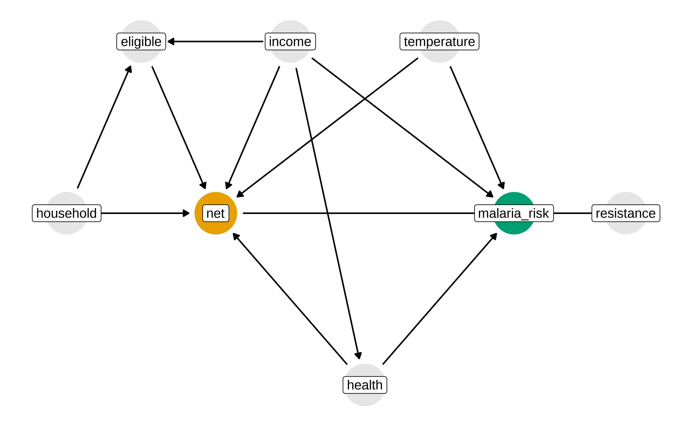
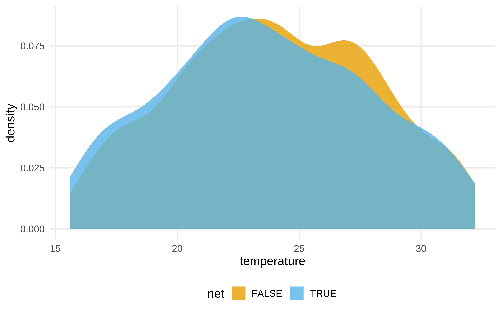
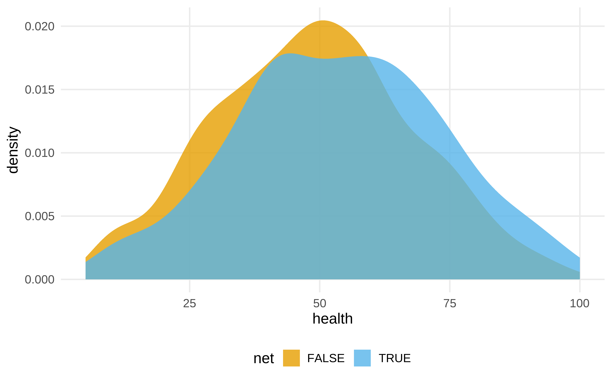
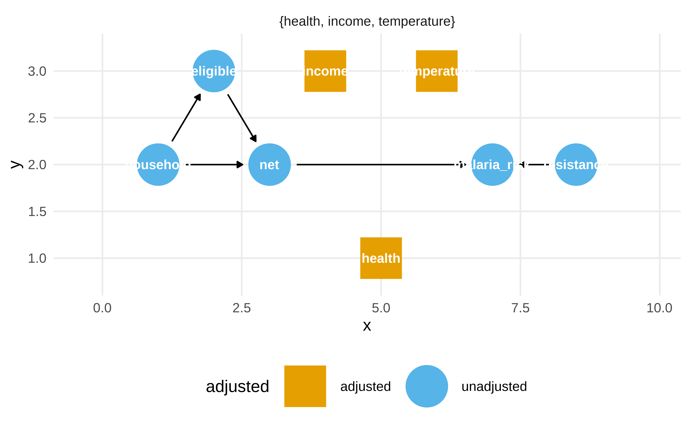
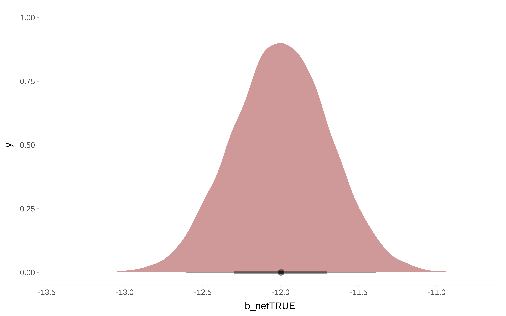
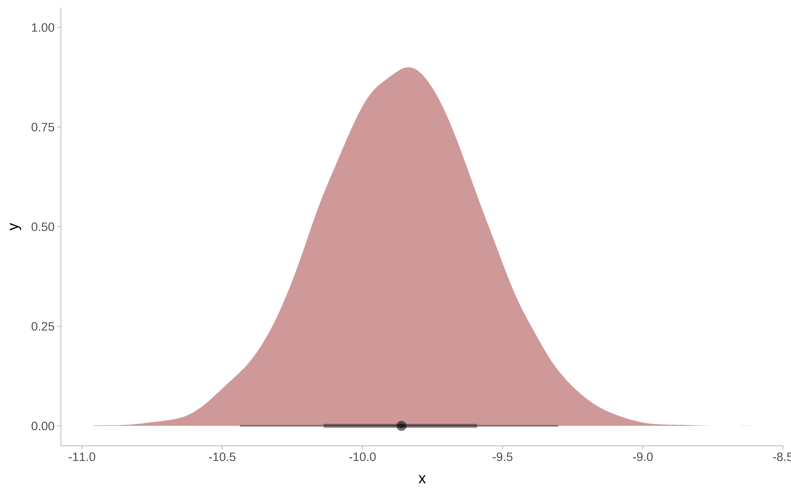

El juego completo
Veamos un ejemplo completo. No hace falta entenderlo todo. Iremos viendo luego cada parte.
El ejemplo viene de aquí
Pasos en el análisis causal.
- Definir la pregunta causal
- Especificar las asunciones, una forma es con un diagrama causal
- Modelar las asunciones
- Diagnosticar el modelo
- Estimar el efecto causal
- Análisis de sensibilidad
Datos
id-
ID
-
netynet_num -
Indican si se usa mosquitera (1) o no (0)
malaria_risk-
Riesgo de malaria 0-100
income-
ingresos, medida en dólares
health-
Puntuación en salud de 0–100
household-
Número de personas en el hogar
eligible-
Indica si el hogar es eligible para programa de mosquitera gratis.
temperature-
La temperatura media por las noches, en Celsius
resistance-
Resistencia de los mosquitos locales al insecticida. Escala de 0–100, valores altos indican mayor resistencia
Especificar cuestión causal
- ¿El uso de la mosquitera reduce el riesgo de malaria?
Dibujar la asunciones
El uso de diagramas causales no es imprescindible, pero ayuda a explicitar las asunciones. Estas asunciones son nuestro modelo de como funcionar las relaciones entre las variables, pero puede que no sean correctas. Siempre habría que chequear el conocimiento experto y confrontar con otras explicaciones.
Show the code
library(tidyverse)
library(ggdag)
library(ggokabeito)
net_data <- read_csv(here::here("data/net_data.csv"))
mosquito_dag <- dagify(
malaria_risk ~ net + income + health + temperature + resistance,
net ~ income + health + temperature + eligible + household,
eligible ~ income + household,
health ~ income,
exposure = "net",
outcome = "malaria_risk",
coords = list(
x = c(
malaria_risk = 7,
net = 3,
income = 4,
health = 5,
temperature = 6,
resistance = 8.5,
eligible = 2,
household = 1
),
y = c(
malaria_risk = 2,
net = 2,
income = 3,
health = 1,
temperature = 3,
resistance = 2,
eligible = 3,
household = 2
)
),
labels = c(
malaria_risk = "Risk of malaria",
net = "Mosquito net",
income = "Income",
health = "Health",
temperature = "Nighttime temperatures",
resistance = "Insecticide resistance",
eligible = "Eligible for program",
household = "Number in the household"
)
)
p1 <- mosquito_dag |>
tidy_dagitty() |>
node_status() |>
ggplot(
aes(x, y, xend = xend, yend = yend, color = status)
) +
geom_dag_edges() +
geom_dag_point() +
geom_dag_label(color = "black") +
# geom_dag_label_repel() +
scale_color_okabe_ito(na.value = "grey90") +
theme_dag() +
theme(legend.position = "none") +
coord_cartesian(clip = "off")
p1
Modelar las asunciones
Dado el DAG anterior, vamos a utilizar una técnica conocida como propensity score weighting. El objetivo de esta técnica es crear una pseudopoblación que imite como habrían sido los datos si se hubiera hecho un RCT (Randomized Controlled Trial).
__¿Hay desequilibrio entre tratamiento y control en las variables de confusión?
Show the code
net_data |>
ggplot(aes(income, fill = net)) +
geom_density(color = NA, alpha = .8)
Show the code
net_data |>
ggplot(aes(temperature, fill = net)) +
geom_density(color = NA, alpha = .8)
Show the code
net_data |>
ggplot(aes(health , fill = net)) +
geom_density(color = NA, alpha = .8)
#> 1 2 3 4 5 6
#> 0.2464 0.2178 0.3230 0.2307 0.2789 0.3060Vemos los ipw. Si una observación ha caído en control pero tiene una probabilidad en el modelo de propensity score de 0.9, su peso es de 1 /(1-0.9) = 10 . Es decir, este individuo se considera un muy buen contrafactual para un individuo de iguales características que hubiera caido en tratamiento.
Show the code
#> # A tibble: 6 × 4
#> net net_num propensity_score ipw
#> <lgl> <dbl> <dbl> <dbl>
#> 1 FALSE 0 0.475 1.90
#> 2 FALSE 0 0.468 1.88
#> 3 FALSE 0 0.461 1.86
#> 4 FALSE 0 0.451 1.82
#> 5 FALSE 0 0.447 1.81
#> 6 FALSE 0 0.438 1.78Show the code
#> # A tibble: 6 × 4
#> net net_num propensity_score ipw
#> <lgl> <dbl> <dbl> <dbl>
#> 1 TRUE 1 0.117 8.56
#> 2 TRUE 1 0.120 8.33
#> 3 TRUE 1 0.126 7.92
#> 4 TRUE 1 0.136 7.36
#> 5 TRUE 1 0.138 7.27
#> 6 TRUE 1 0.139 7.19Copia la parte de obtener los peso ipw a partir de las predicciones
Diagnosticar las asunciones
¿Qué es lo que ha cambiado al hacer el ipw?
Estimar el efecto causal
Usando ipw
Pero una vez se ha hecho el ipw, la varianza del estimador que da el modelo lm no es correcta, hay que calcularla usando otras técnicas, como estimadores robustos o bootstrap. Usaremos bootstrap
Usando reglas de Pearl
Pensemos como cortar los caminos no causales
Show the code
p1
Pero la librería dagitty nos sirve para esto
Show the code
dagitty::adjustmentSets(mosquito_dag, effect = "total")#> { health, income, temperature }Show the code
ggdag_adjustment_set(mosquito_dag, effect = "total")
Modelo bayesiano
Show the code
m_bayesian <- brm(
malaria_risk ~ net + income + temperature + health ,
data = net_data,
seed = 48,
chains = 4,
iter = 4000,
warmup = 1000,
cores = 4,
file = here::here("brms_stan_models/net_1"),
file_refit = "on_change"
)
# hqy que evitar el exceso de decimales dando impresión de falsa exactitud
m_bayesian#> Family: gaussian
#> Links: mu = identity; sigma = identity
#> Formula: malaria_risk ~ net + income + temperature + health
#> Data: net_data (Number of observations: 1752)
#> Draws: 4 chains, each with iter = 4000; warmup = 1000; thin = 1;
#> total post-warmup draws = 12000
#>
#> Regression Coefficients:
#> Estimate Est.Error l-95% CI u-95% CI Rhat
#> Intercept 79.36 1.03 77.35 81.39 1.00
#> netTRUE -12.00 0.31 -12.61 -11.39 1.00
#> income -0.08 0.00 -0.08 -0.07 1.00
#> temperature 1.01 0.03 0.94 1.08 1.00
#> health 0.14 0.01 0.12 0.16 1.00
#> Bulk_ESS Tail_ESS
#> Intercept 11125 10282
#> netTRUE 10925 8382
#> income 11593 9652
#> temperature 10913 8132
#> health 11001 9015
#>
#> Further Distributional Parameters:
#> Estimate Est.Error l-95% CI u-95% CI Rhat
#> sigma 5.70 0.10 5.51 5.89 1.00
#> Bulk_ESS Tail_ESS
#> sigma 12498 8777
#>
#> Draws were sampled using sample(hmc). For each parameter, Bulk_ESS
#> and Tail_ESS are effective sample size measures, and Rhat is the potential
#> scale reduction factor on split chains (at convergence, Rhat = 1).Show the code
round(posterior_summary(m_bayesian, variable = "b_netTRUE"), 2)#> Estimate Est.Error Q2.5 Q97.5
#> b_netTRUE -12 0.31 -12.61 -11.39Show the code
m_bayesian |>
as_tibble() |>
ggplot() +
ggdist::stat_halfeye(
aes( x = b_netTRUE),
fill = "darkred",
alpha = 0.4) +
ggdist::theme_ggdist()
Análisis de sensibilidad
Y si hubiera una variable de confusión no observada?. Si fuera un RCT, el mismo mecanismo de aleatorización nos protege frente a esas variables, pero no en un estudio observacional.
Imaginemos que existe una variable de confusión que es resistencia genética de la población a la malaria.
Suponemos lo siguiente.
- Está asociada con la variable respuesta, porque en media la gente con resistencia genética tiene una reducción de riesgo alrededor de 10.
- Está asociada con la variable de tratamiento, puesto que entre los que usan mosquiteras, el 26 % tienen esta resistencia. Pero entre los que no usan mosquiteras, solo el 5% la tienen.
Con la librería tipr se puede inferir cuál sería el efecto si existiera ese confounder no observado.
Verdadero DAG
Y después de todo, como los datos son simulados sabemos que existe una variable de confusión
Show the code
mosquito_dag_full <- dagify(
malaria_risk ~ net + income + health + temperature + insecticide_resistance + genetic_resistance,
net ~ income + health + temperature + eligible + household + genetic_resistance,
eligible ~ income + household,
health ~ income,
exposure = "net",
outcome = "malaria_risk",
coords = list(
x = c(
malaria_risk = 7,
net = 3,
income = 4,
health = 5,
temperature = 6,
insecticide_resistance = 8.5,
eligible = 2,
household = 1,
genetic_resistance = 8.5
),
y = c(
malaria_risk = 2,
net = 2,
income = 3,
health = 1,
temperature = 3,
insecticide_resistance = 2,
eligible = 3,
household = 2,
genetic_resistance = 1
)
),
labels = c(
malaria_risk = "Risk of malaria",
net = "Mosquito net",
income = "Income",
health = "Health",
temperature = "Nighttime temperatures",
insecticide_resistance = "Insecticide resistance",
eligible = "Eligible for program",
household = "Number in household",
genetic_resistance = "Malaria resistance"
)
)
mosquito_dag_full |>
tidy_dagitty() |>
node_status() |>
ggplot(
aes(x, y, xend = xend, yend = yend, color = status)
) +
geom_dag_edges() +
geom_dag_point() +
geom_dag_label_repel() +
scale_color_okabe_ito(na.value = "grey90") +
theme_dag() +
theme(legend.position = "none") +
coord_cartesian(clip = "off")
#> Rows: 1,752
#> Columns: 11
#> $ id <int> 1, 2, 3, 4, 5, 6, 7, 8…
#> $ net <lgl> FALSE, FALSE, FALSE, F…
#> $ net_num <int> 0, 0, 0, 0, 0, 0, 0, 0…
#> $ malaria_risk <int> 38, 48, 32, 55, 36, 30…
#> $ income <int> 779, 700, 1083, 753, 9…
#> $ health <int> 35, 35, 58, 68, 46, 37…
#> $ household <int> 1, 3, 3, 3, 5, 3, 1, 2…
#> $ eligible <lgl> FALSE, FALSE, FALSE, F…
#> $ temperature <dbl> 18.3, 18.6, 24.2, 19.1…
#> $ insecticide_resistance <int> 38, 40, 70, 57, 59, 49…
#> $ genetic_resistance <int> 0, 0, 0, 0, 0, 0, 0, 1…Show the code
fit_ipw_full <- function(split, ...) {
# get bootstrapped data sample with `rsample::analysis()`
.df <- analysis(split)
# fit propensity score model
propensity_model <- glm(
net ~ income + health + temperature + genetic_resistance,,
data = .df,
family = binomial()
)
# calculate inverse probability weights
.df <- .df |>
mutate(
propensity_score = predict(propensity_model, type = "response")
) |>
mutate(
ipw = ifelse(net_num == 1, 1 / propensity_score, 1 / (1 - propensity_score))
)
# fit correctly bootstrapped ipw model
lm(malaria_risk ~ net, data = .df, weights = ipw) |>
tidy()
}Show the code
bootstrapped_net_data_full <- bootstraps(
net_data_full,
times = 1000,
# required to calculate CIs later
apparent = TRUE
)
ipw_results_full <- bootstrapped_net_data_full |>
mutate(boot_fits = map(splits, fit_ipw_full))
boot_estimate_full <- ipw_results_full |>
# calculate T-statistic-based CIs
int_t(boot_fits) |>
filter(term == "netTRUE")
boot_estimate_full#> # A tibble: 1 × 6
#> term .lower .estimate .upper .alpha .method
#> <chr> <dbl> <dbl> <dbl> <dbl> <chr>
#> 1 netTRUE -11.2 -10.3 -9.27 0.05 student-tShow the code
#> Family: gaussian
#> Links: mu = identity; sigma = identity
#> Formula: malaria_risk ~ net + income + temperature + health + genetic_resistance
#> Data: net_data_full (Number of observations: 1752)
#> Draws: 4 chains, each with iter = 4000; warmup = 1000; thin = 1;
#> total post-warmup draws = 12000
#>
#> Regression Coefficients:
#> Estimate Est.Error l-95% CI
#> Intercept 79.29 0.90 77.52
#> netTRUE -9.86 0.29 -10.44
#> income -0.08 0.00 -0.08
#> temperature 1.04 0.03 0.98
#> health 0.14 0.01 0.12
#> genetic_resistance -9.52 0.41 -10.31
#> u-95% CI Rhat Bulk_ESS Tail_ESS
#> Intercept 81.03 1.00 10903 9660
#> netTRUE -9.30 1.00 10819 8422
#> income -0.07 1.00 11791 9128
#> temperature 1.10 1.00 10462 8164
#> health 0.16 1.00 11451 8186
#> genetic_resistance -8.71 1.00 9734 8175
#>
#> Further Distributional Parameters:
#> Estimate Est.Error l-95% CI u-95% CI Rhat
#> sigma 4.99 0.08 4.83 5.16 1.00
#> Bulk_ESS Tail_ESS
#> sigma 11168 8306
#>
#> Draws were sampled using sample(hmc). For each parameter, Bulk_ESS
#> and Tail_ESS are effective sample size measures, and Rhat is the potential
#> scale reduction factor on split chains (at convergence, Rhat = 1).Show the code
round(posterior_summary(m_bayesian_full, variable = "b_netTRUE"), 2)#> Estimate Est.Error Q2.5 Q97.5
#> b_netTRUE -9.86 0.29 -10.44 -9.3Show the code
posteriores <- as_tibble(m_bayesian_full)
post_rvars <- as_draws_rvars(posteriores)
post_rvars$b_netTRUE |>
enframe() |>
ggplot() +
ggdist::stat_halfeye(
aes( xdist = value),
fill = "darkred",
alpha = 0.4) +
ggdist::theme_ggdist()